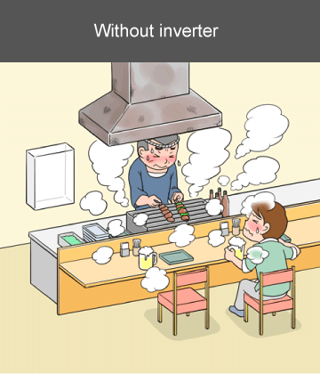
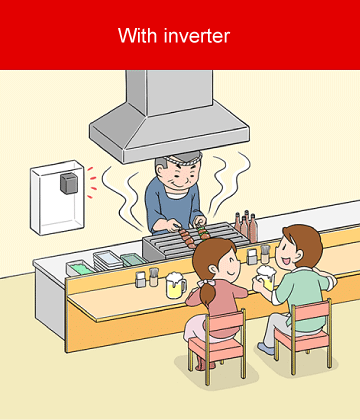

Inverters-FREQROL Product Features Equipment maintenance

|  |  | |
| In the event of a malfunction or a problem, there is a risk of shutdown and stable operation is difficult. |
Failures and problems can be prevented before they occur, enabling stable operation. |
In the event of a malfunction or a problem, there is a risk of
shutdown and stable operation is difficult.
▼
Failures and problems can be prevented before they occur,
enabling stable operation.
Maintenance-related functions of inverters
Mitsubishi Electric inverters have various maintenance-related functions.
These functions help prevent failures and reduce the cost of troubleshooting.

| Maintenance | Overview | Related function of inverter |
|---|---|---|
| Predictive maintenance | When the monitored sign of trouble exceeds the predetermined level, replace relevant parts. |
|
| Preventive maintenance | After a predetermined use period, replace relevant parts. | |
| Breakdown maintenance | If equipment breaks, replace relevant parts. |